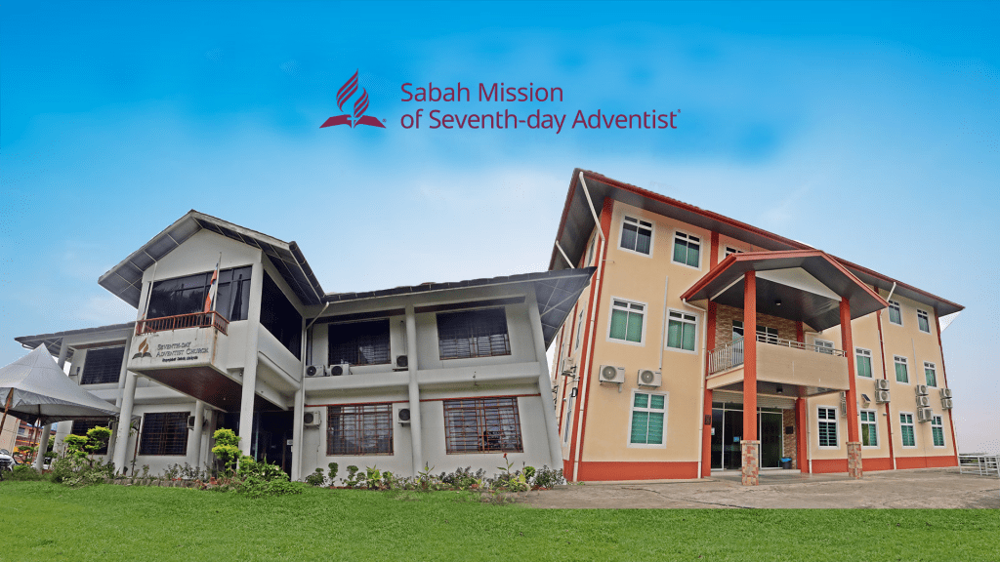
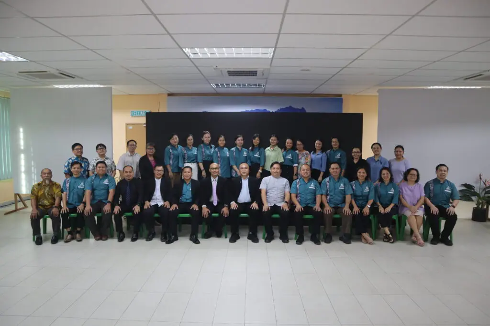
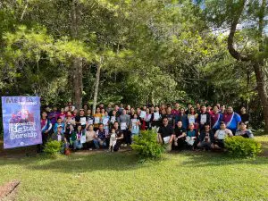

Welcome to the online home for the Sabah Mission of Seventh-day Adventists! Sabah Mission Headquarters is the coordinating hub of the Adventist Church in Sabah Mission. We exist to help people in Sabah and the Federal Territory of Labuan understand the Bible to find freedom, healing and hope in Jesus Christ. Thank you for checking out our site.

Seventh-day Adventist beliefs are meant to permeate your whole life. Growing out of scriptures that paint a compelling portrait of God, you are invited to explore, experience and know the One who desires to make us whole.
Discover More ›
